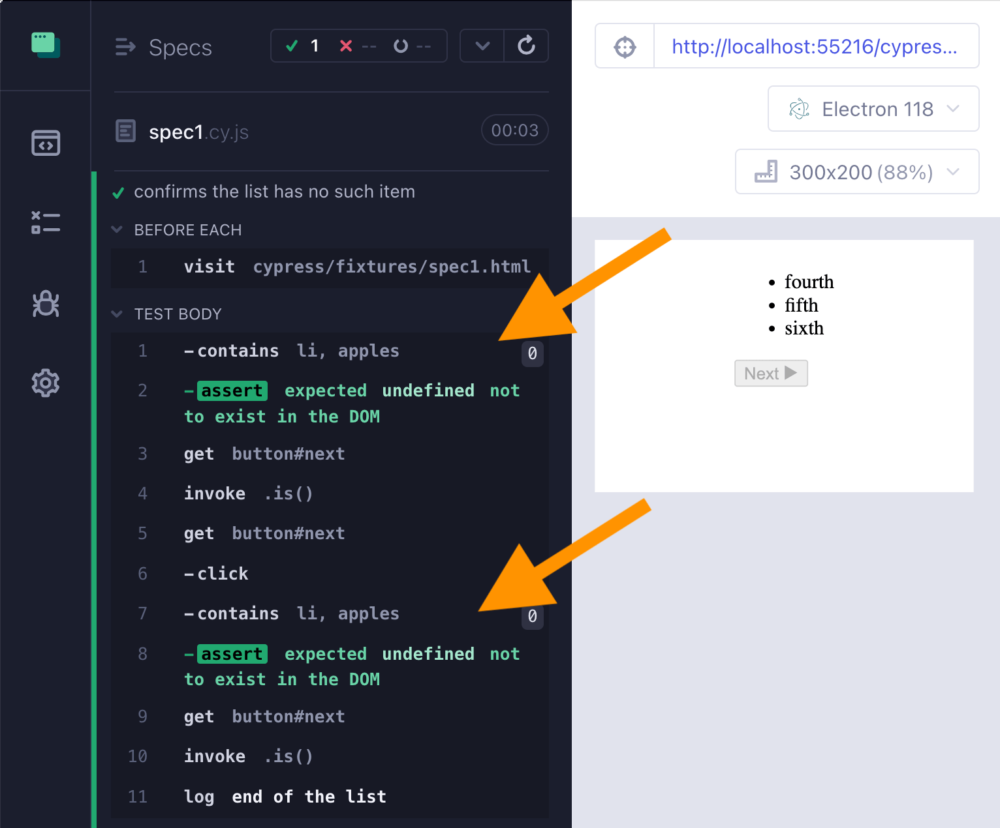
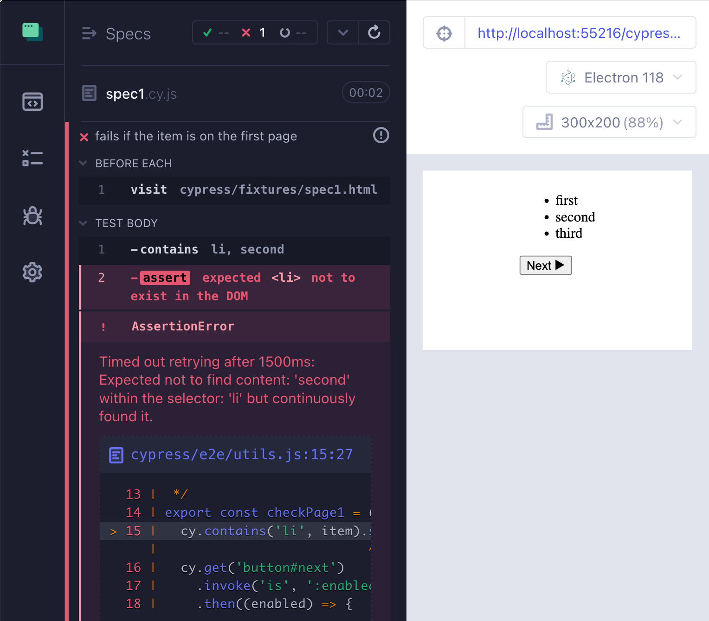
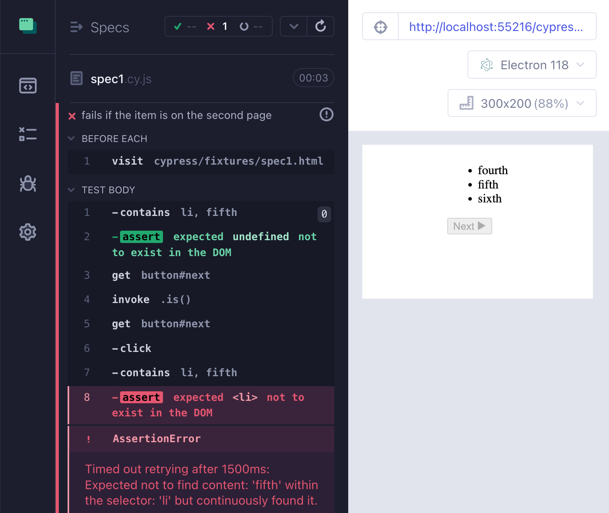
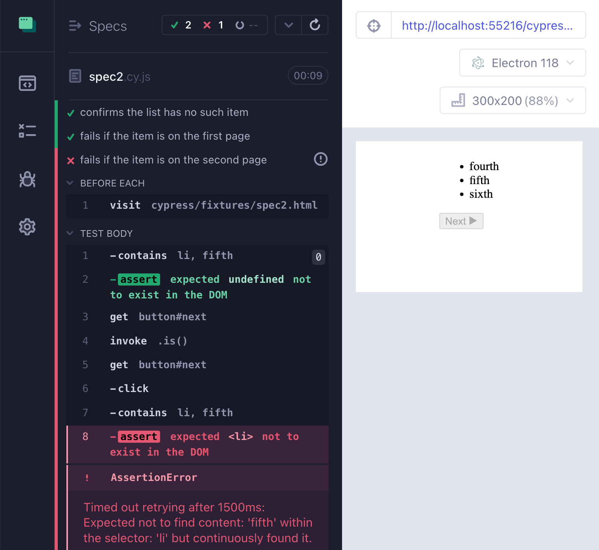
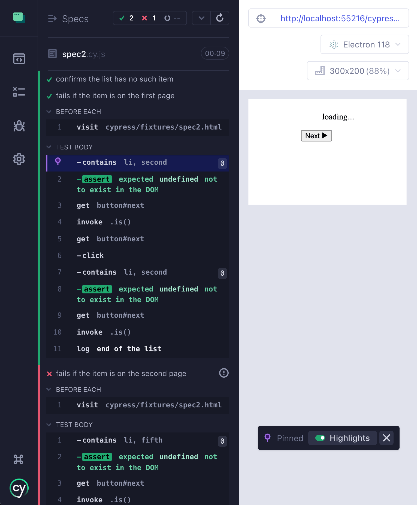
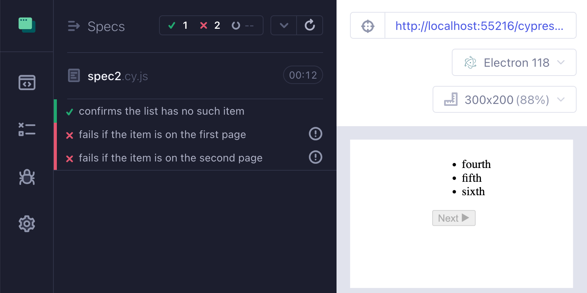
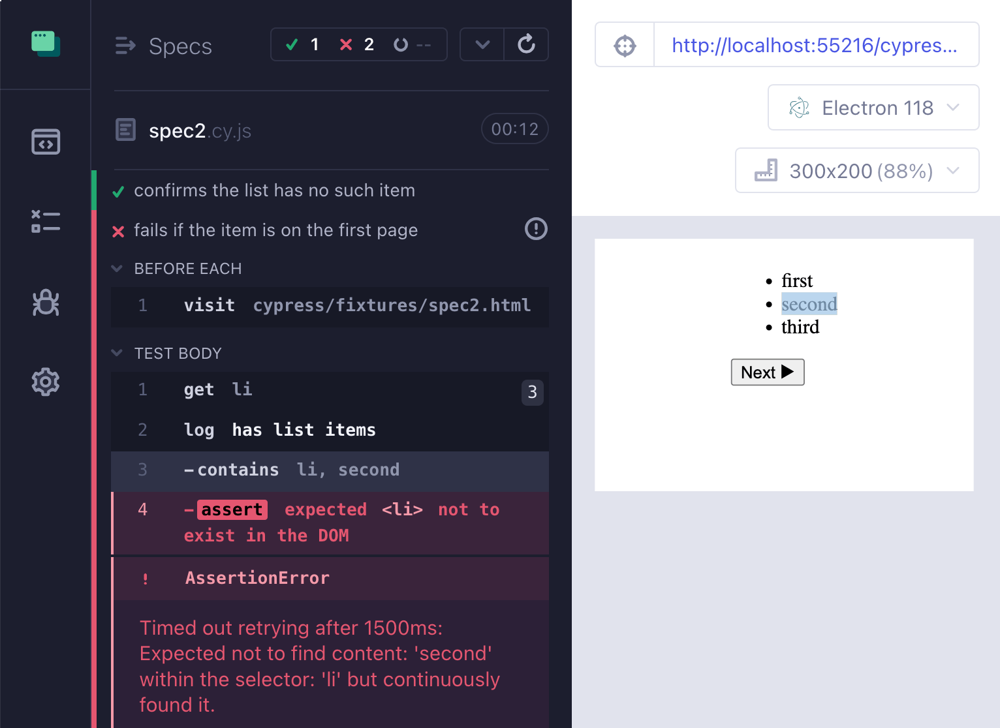
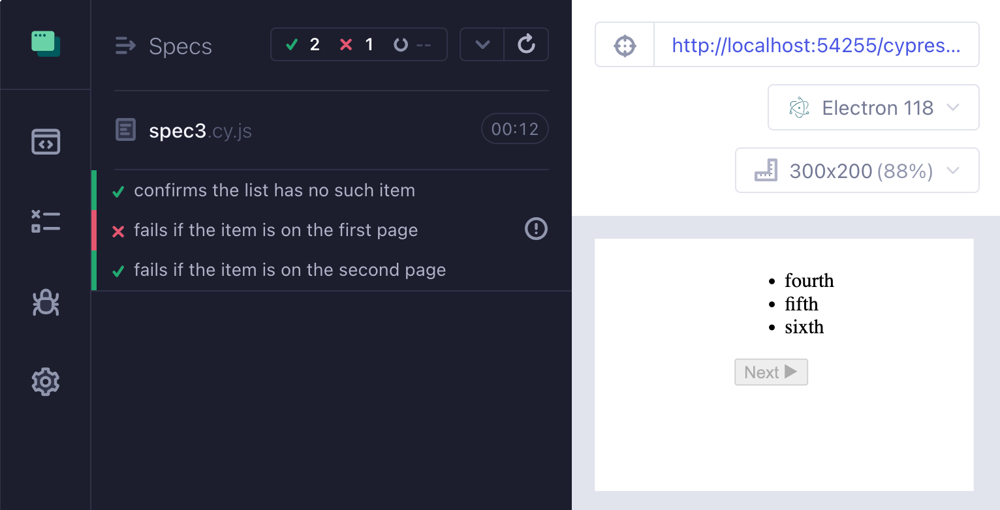
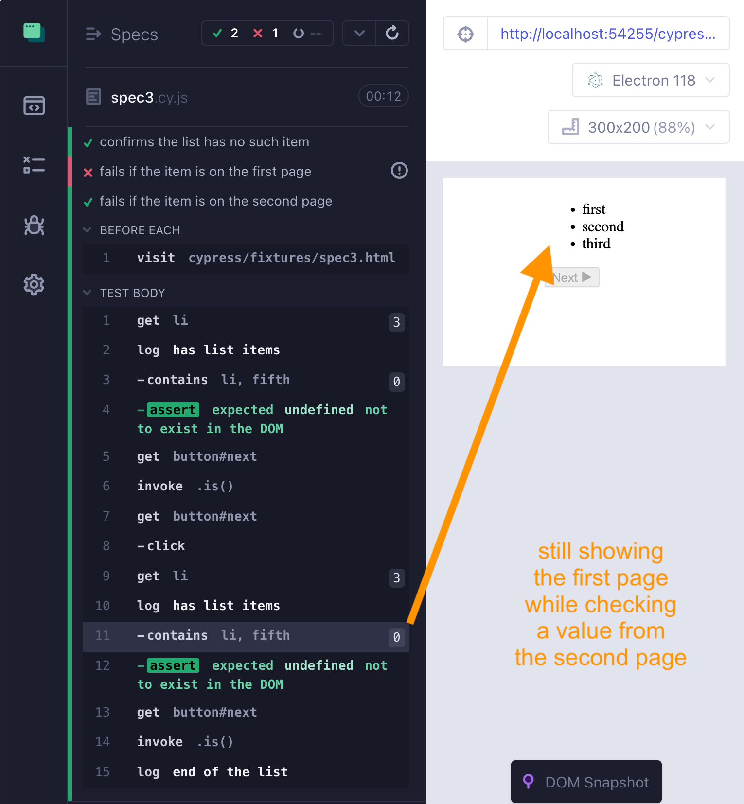
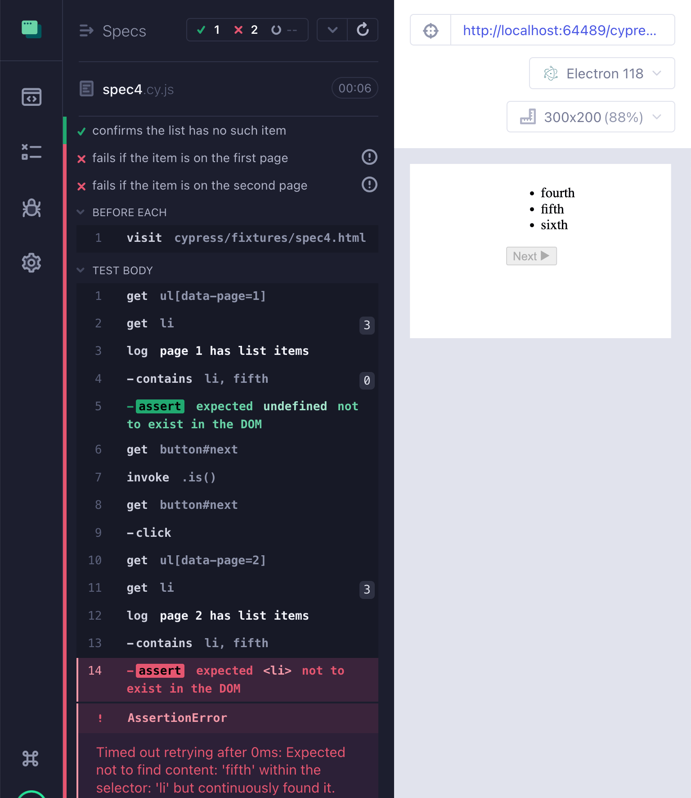

In my recent blog post Cypress Pagination Challenge I have shown several solutions to a common testing problem: flip through the rows of data, looking for something to be there (or to not be there). In this blog post, I will take it up a notch. I will show several pagination edge cases that make writing a good flake-free end-to-end test difficult. I have seen these errors in my tests and in the testing code written by others. It is time to solve it for good. Let's go.
🎁 You can find the full source code in the repo bahmutov/cypress-pagination-tough-case.
The easy case
Let us start with a nice happy path. We see a list with a few items. We can click on the "Next" button and go to the second page. For simplicity, the list ends on the second page, but our solution does not know that. The list has only the words first, second, third, fourth, fifth, and sixth. The test should stop checking the list when the "Next" button becomes disabled.
Here is the code for the page. As you can see, the app is very fast. It instantly renders the first list, then instantly renders the second page after clicking the "Next" button.
1 | <body> |
How would you write this test?
1 | beforeEach(() => { |
We are doing an example of negative testing, we are trying to confirm that something is NOT there. This is always more complex than confirming the presence, since an item can missing for many reasons. In any case, let's write a recursive algorithm, I will put it in the cypress/e2e/utils.js file so we can use it from other specs. In the code below we are doing a conditional command depending on the "Next" button state. For more examples of conditional clicking see the blog post Click Button If Enabled.
1 | /** |
Our test can call the checkPage1 with the a string argument. Note: for this blog post, I slow down every Cypress commands by 200ms using my plugin cypress-slow-down.
1 | // https://github.com/bahmutov/cypress-slow-down |
The test passes. If we inspect the contains ... commands for both pages, we see that the test did check the list at the right moment. In the first instance it checked the list when the list had values first, second, and third. And in the second instance, the test checked the list when it was on the second page showing the values fourth, fifth, and sixth.

If you look at the video again, I am showing the page at the moment the cy.contains command ran twice.
Unhappy paths
Let's break the test on purpose to make sure it works correctly. Let's give it a string value that is present on the page. The value is second so it should be found on the first page.
1 | it('fails if the item is on the first page', () => { |

What if the item is on the second page? Let's test it.
1 | it('fails if the item is on the second page', () => { |

Beautiful, our checkPage1 recursive test function is correct. Or is it?
Slow application load
A common problem in the SPA is the slow initial data load. I simulate it in the spec2.html page
1 | <body> |
The initial list loads after 1 second, meanwhile the app is showing the loading... text. Let's run the same 3 tests again and see if we have the same outcome:
1 | // EXPECTED |
1 | // https://github.com/bahmutov/cypress-slow-down |
Hmm. We are getting one test "flipped"
1 | // ACTUAL |

The second test that checks the item that should be found on the first page is green for some reason. Let's debug it. We can expand the test commands and click on the "contains 'second'" command to see how the page looked when the test checked the list.

Ooops, the test looked for the item with the test "second", the page was showing "loading...", the test happily continued on its way.
Remember: a negative assertion can pass for many reasons
The reason for the test passing while it should have been failing is confusion to what state the application is in. The test thinks the app is showing the list. The app is still showing the loading element. The solution is to "sync" the application and the test states. For example, the test can wait for the li elements to appear before running a negative assertion. This will ensure the app is in the right state showing the items.
1 | /** |
In a TodoMVC application, the code might set a loaded class to signal that the page has the list, and the test could do something like this:
1 | cy.visit('/') |
In our code, the checkPage2 function confirms the list items are present before checking them: cy.get('li').log('**has list items**'). Let's see if the checkPage2 test utility leads to the correct test outcome.
1 | // https://github.com/bahmutov/cypress-slow-down |

If we debug the second test, we see that it fails for the right reason. The application is showing the actual list items first, second, and third when the first "contains" assertion checks it.

Good. But this is not the entire story.
Slow page transition
Let's introduce another challenge. Our application might be slow to update the list after the user clicks the "Next" button. I have seen applications where clicking the "Next" button updated the button itself, yet the list was still showing the old items for X milliseconds. Here is how I simulate it in the spec3.html code:
1 | <body> |
Let's use our checkPage2 function to run against this application.
1 | // https://github.com/bahmutov/cypress-slow-down |
We are expecting again the first test to pass and the last two tests to fail. But we are getting something else:
1 | // EXPECTED |

Let's debug the third test. Hover or click over the second "contains li, fifth" command. Why is it still showing the first page?!!

Again, this is the confusion between the test and the application state. The test assumed that after clicking on the "Next" button and seeing list items, the app would be on the second page. But the application still showed the first page. In other circumstances we could have looked at the URL to confirm the page number
1 | // if the app rendered the page in the URL |
But we don't have it. So somehow we need to check that new list item elements are there on the page. People often use the text of an element to detect when the new list was rendered:
1 | // 🚨 INCORRECT, LEADS TO FLAKE |
The above code might work in some cases, but if the list has duplicates, it would fail. Imagine our list has items A, A, and A on the first page, and the items A, B, and C on the second. It would not be able to tell the two A strings apart. A better way would be to check the element references, since the application replaces <LI> elements on click:
1 | // ✅ check element references |
To simplify the above code we can use a query cy.stable from my cypress-map plugin. The query retries until an element's reference remains constant for N milliseconds. Thus, if we know that the list switch takes at most 1 second, we can wait for the reference to remain stable for slightly longer period.
1 | // https://github.com/bahmutov/cypress-map |
Let's see our spec now.
The tests work exactly as expected. The third test gets to the second page, waits for the <LI> elements to be stable, and then correctly finds the item with text "fifth"..
Speed
A huge downside to the cy.stable command is that it must wait for N milliseconds. In our case, it waits for 1500ms. If the <LI> elements switch after 300ms, then it would wait for 300 + 1500ms. We can make our test better. Remember: if the test "knows" what state the applicatin is in, then it can precisely wait for it, before running a negative assertion. Here is how I would modify my application to make it testable.
1 | // the list sets the correct data attribute |
The only thing this code does it sets the data-page attribute when it renders the page:
1 | list.setAttribute('data-page', 1) |
Our test can take the advantage of the data-page=... attribute to be much simpler
1 | /** |
Once the command cy.get("ul[data-page=${page}]") passes, the test is good to check the items. We can even use a very short timeout limit to run our negative assertion, since we know the items are already there and won't change.

Nice.